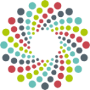
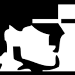

Conversation 795
Collimated Double Laminated Configuration
Prompt 1 · You
collimated double laminated ||
Response 1 · Google AI Mode
Collimated double laminated refers to a configuration that combines a collimated light or radiation field with a double laminated physical structure. Depending on the specific industry, this terminology applies to two main fields:
1. Advanced Architecture & Safety Glazing
In high-end architectural engineering, a collimated double laminated unit represents a specialized window or panel assembly designed for laser-safe rooms, precise optical pathways, or high-contrast projection.

Figshare +1- The "Collimated" aspect: The glass panes are structurally optimized to allow an incoming collimated laser beam or light source to pass straight through with practically zero beam distortion, wavefront error, or stray scatter.
 YouTube·Radiology Tutorials +1
YouTube·Radiology Tutorials +1 - The "Double Laminated" aspect: The setup consists of multiple glass sheets bonded together by two distinct polymer interlayers (such as PVB or SGP). This ensures maximum safety, blast/burglary protection, and acoustics, while the specific configuration preserves parallel light propagation. www.everest.co.uk +2
2. Specialized Optical Filters & Display Films
In electronics and optics manufacturing, the phrase refers to multi-layered films used for directional backlighting (e.g., in high-contrast LCDs, head-up displays, or 3D printers):

Displays & Optical Technologies, Inc. +1- Double-Sided Structures: These sheets utilize a double matrix or array—such as a double-sided micro-lenticular lens film or a double grating layout—to restrict scattering angles.
 ResearchGate +1
ResearchGate +1 - Collimation Performance: By laminating these functional optical layers together, they convert diffuse, scattered backlight into highly ordered, parallel "collimated" light rays, drastically increasing energy efficiency and display contrast. Yudi Optics +1
To provide the most accurate engineering details or product sources, could you specify your target application?
- Are you designing an architectural laser-room window or cleanroom glazing?
- Is this for an optical assembly, display backlight component, or industrial sensor?
- Do you have a specific wavelength requirement (e.g., 405nm UV, visible light, or infrared lasers)?
Source links preserved from this response
- opticapublishing.figshare.com
https://opticapublishing.figshare.com/collections/Double-sided_structure_collimation_film_DSSCF_for_direct-lit_backlight_in_high-contrast_liquid_crystal_display_and_3D_printing/8390851 - www.youtube.com
https://www.youtube.com/watch?v=x7QUZU7v2fk&t=135 - www.everest.co.uk
https://www.everest.co.uk/glass/laminated-glass/ - doti-optics.com
https://doti-optics.com/products/collimators/ - www.researchgate.net
https://www.researchgate.net/publication/44664800_Collimation_method_using_a_double_grating_system - www.yudi-optics.com
https://www.yudi-optics.com/collimating-lenses-a-deep-dive-into-the-science-design-and-industry-applications/